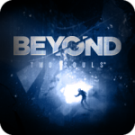
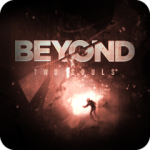
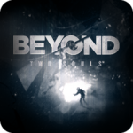
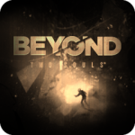

Dificultad del Platino: 3 sobre 10
Duracion estimada para el platino: 20 - 25Horas
Trofeos Offline: 45
Trofeos Ocultos: 44
Minimo de Partidas para el Platino:1 Partida con 2 mandos + Repeticion de capitulos + diferentes finales
Trofeos Perdibles:No tiene, se pueden repetir capitulos
¿Influye la dificultad en los trofeos? No tiene
Total de Trofeos: 45
CUIDADO SPOILERS

MAESTRA DE BEYOND: TWO SOULS™¡Has conseguido todos los trofeos!

¿Alguien más?Has jugado como Aiden por primera vez.Al poco de empezar el juego, cuando utilizamos a Jodie nos hacen una prueba en la que demos manejar a Aiden pulsando
Triangulo, una vez cambiado de personaje ya tendremos el trofeoObedienciaHas detenido el experimento voluntariamente.Durante el experimiento, nos pediran adivinar las fichas que tiene la persona de la otra sala, manejamos a Aiden
y descubrimos cuales son, despues nos pediran si somos capaces de hacer algo mas, movemos los bloques, la mesa o el bolso y paramos,
asi obtendremos el trofeoCompañerosHas hecho 3 travesuras con Jodie y Aiden.Capitulo Mi Amigo Imaginario, Jodie es una niña, esta nevando y estas dentro de la casa, debes hacer 3 cosas, con Aiden, subir
las sillas encima de la mesa, encender la pequeña radio, con Jodie ir al frigorifico y mirar el tarro de gallestas pulsando y despues con
Aiden abrir el tarro y sacar una galleta.Aprendiz de entidadesHas vencido a las entidades con Aiden.Para este trofeo son necesarios ganar todos los enfrentamientos a entidades malignas en alguno de los capitulos
"Primera Noche" o "El Condensador", con hacerlo en uno de esos ya tendremos el trofeo, debemos eliminar a todas las entidades que
atacan a Jodie para obtener el trofeo, algunas es pulsando L1 y bajando los jostick para cargar energia y otras con L1 y llevandolos
al centro para reventar la entidad maligna

FinSe ha descubierto una posible realidad...Se obtiene al completar el juegoNunca solaHas comenzado al menos un romance.Yo lo hice con Ryan, cuando lo llevas a cenar a tu apartamento, recogi la casa, prepare la cena, ducha y vestido elegante,
con Aiden apenas hice nada que molestara y al final obtuve el trofeo, tambien se puede hacer en el capitulo Navajos, si salvas a Paul
te dan la opcion de besarte y tambien obtendras el trofeo

Juntos hasta el finHas terminado el juego en modo Dúo.Para este trofeo, debes pasarte todo el juego con 2 mandos (o la aplicacion de movil-tablet Beyond Touch), uno controla
a Jodie y el otro Aiden, tiene que ser en una nueva partida, no funciona por capitulos.